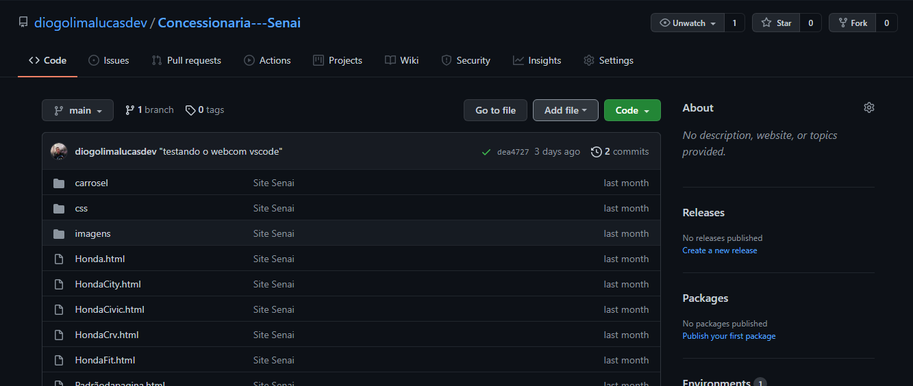
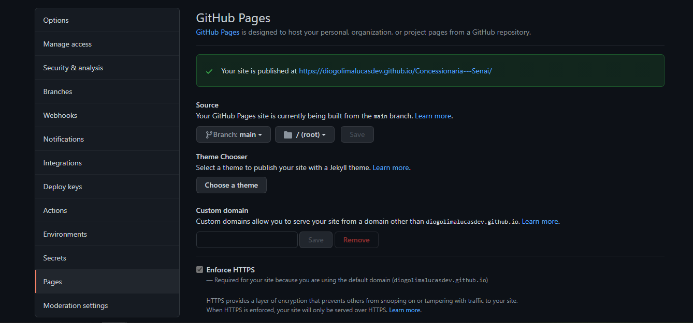
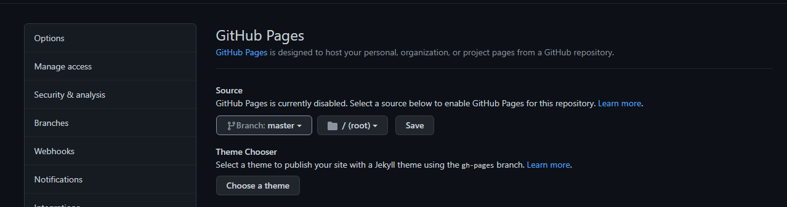
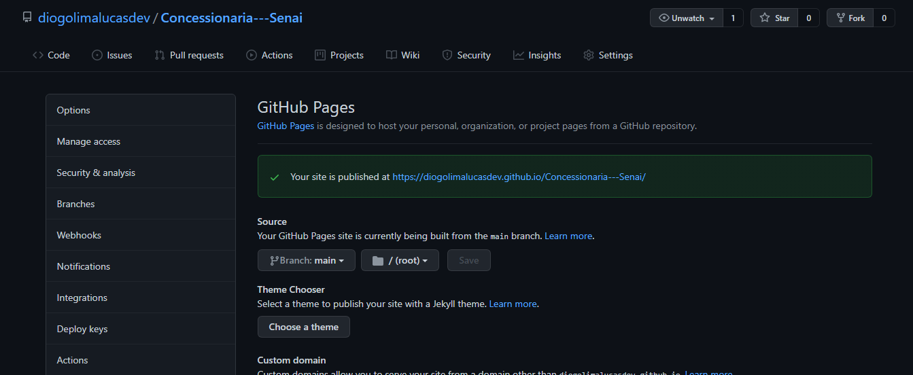
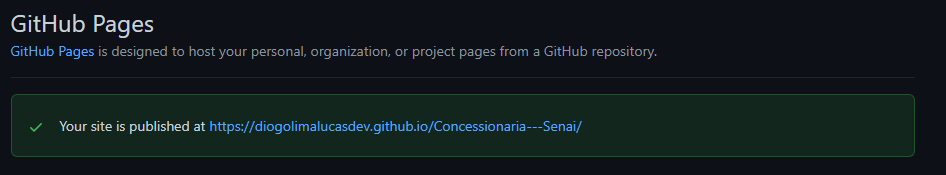

GitHub Pages
Como funciona o GitHub Pages: O GitHub Pages é um serviço de
hospedagem de site estático que usa arquivos HTML, CSS e JavaScript
diretamente de um repositório no GitHub e, como opção, executa os
arquivos por meio de um processo e publica um site. Para hospedar um
site para o seu usuário ou organização, basta iniciar um repositório
de nome username.github.io, onde username é o nome do seu usuário no
GitHub ou da sua organização. Para que o conteúdo seja hospedado
diretamente pelo GitHub Pages é necessário que ele esteja no branch
master do repositório. Depois de atualizá-lo, com um arquivo
index.html por exemplo, já podemos acessá-lo através da URL
http://username.github.io.
Para acessar seu gitpages, você deverá clicar no menu repositores em
seguida clicar no repositório em que deseja acessar as páginas web. Em
seguida vá até o menu settings e do lado esquerdo da tela clicar em
pages. após isso localizar o Source e colocar em master e clicar em
save. E então o link da sua página web será gerado.
1º No nome do seu repositório, clique em Configurações que pode estar escrito Settings. 
2º Na barra lateral esquerda, clique em Pages (Páginas).

3º Apos acessar a página Pages, certifique-se que a opção do Root
esteja seleconada, igua na imagem e clique na opção
Save

4º Para ver seu site publicado, em "GitHub Pages", clique na URL do
seu site.
Demora entre 2 a 5 minutos, então se der um erro 404 nao se
preocupe,apenas espere e atualize apertando atecla F5

1º Acesse seu repositório do site criado, vai em
Settings
2º Na barra lateral esquerda, clique em Pages (Páginas).
3º Clique no link que esta em azul

4º Pronto Seu Site estar no Ar